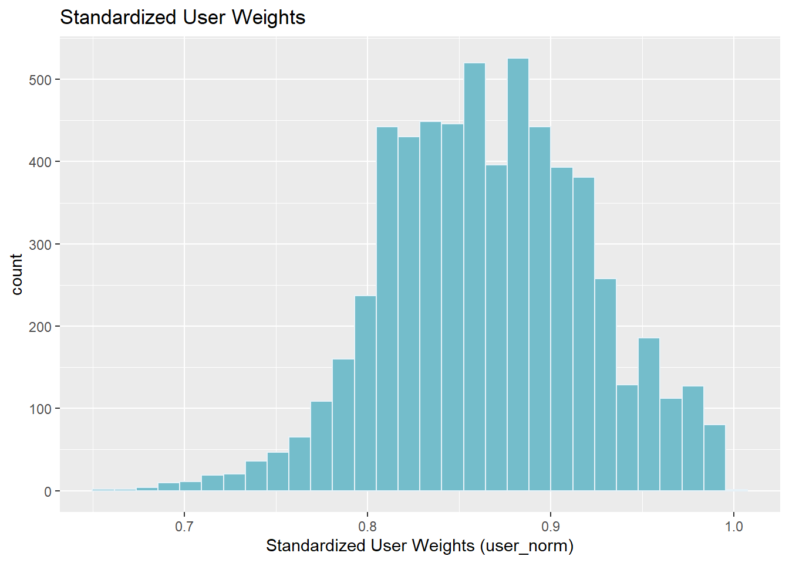
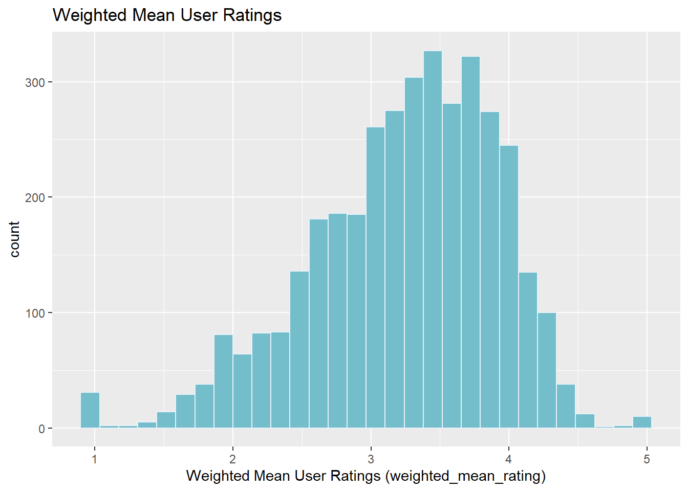
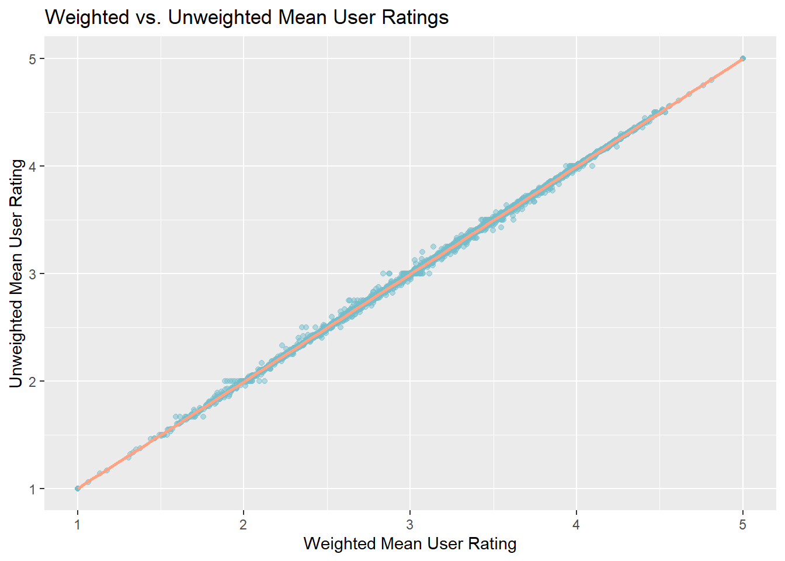
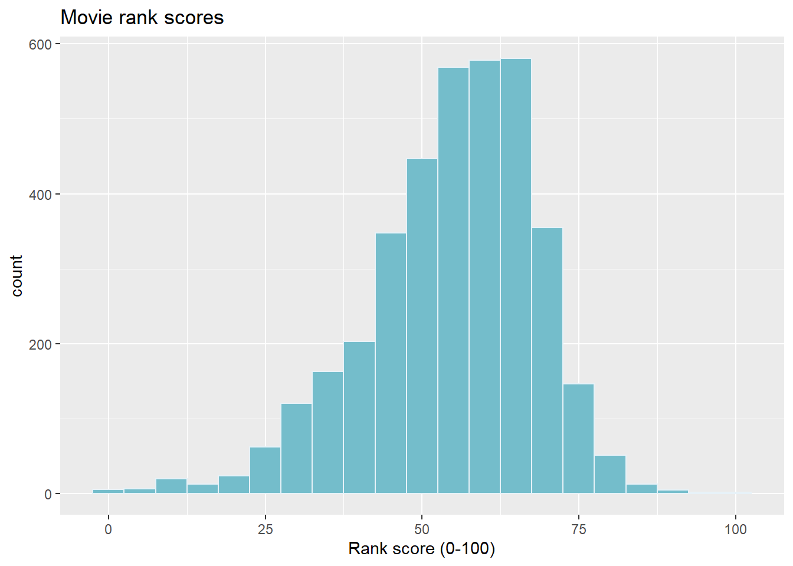
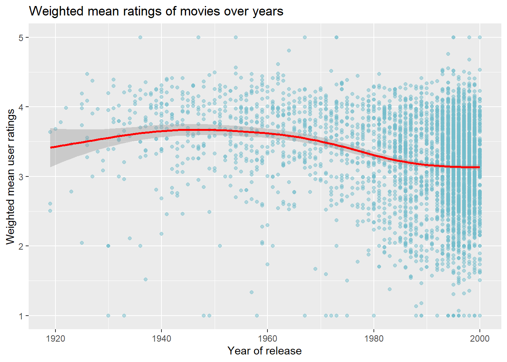
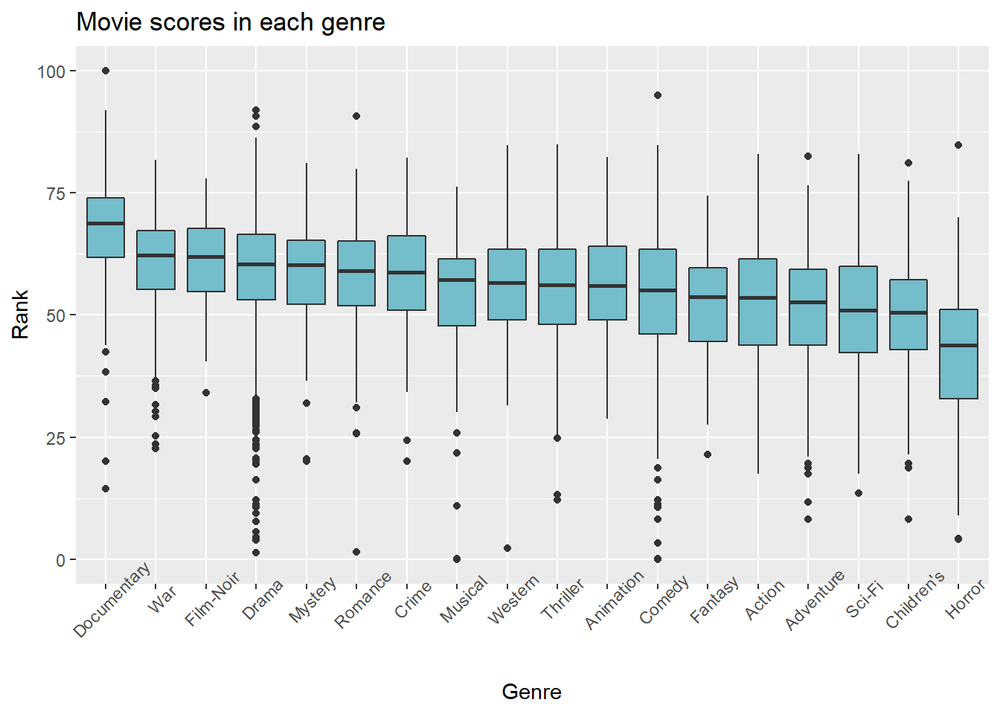
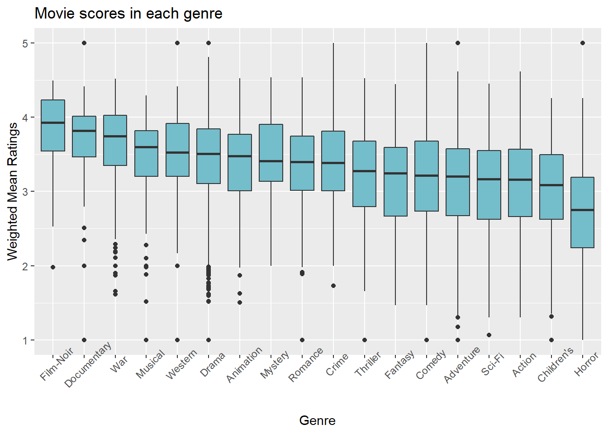

Reveal the code
library(stringr)
library(dplyr)
library(tidyverse)
library(lubridate)
library(ggplot2)
library(gridExtra)
library(recommenderlab)The dataset contains about 1 million anonymous ratings of approximately 3,900 movies made by 6,040 MovieLens users who joined MovieLens in 2000. General information about the data is introduced in this document, but for more in-depth documentation on the data refer to raw/README.txt.
library(stringr)
library(dplyr)
library(tidyverse)
library(lubridate)
library(ggplot2)
library(gridExtra)
library(recommenderlab)user_id): Number ID for each user.movie_id): Number ID for each movie.rating): Five-star number rating (i.e., 1-5).timestamp): Number of seconds since epoch (i.e., Jan 1, 1970).# data_url = "https://github.com/wjonasreger/shiny_movie_recommender/raw/"
# url_dl = "?raw=true"
data_url = "../raw/"
url_dl = ""
ratings = read.csv(paste0(data_url, 'ratings.dat', url_dl),
sep = ':',
colClasses = c('integer', 'NULL'),
header = FALSE)
colnames(ratings) = c('user_id', 'movie_id', 'rating', 'timestamp')
head(ratings) user_id movie_id rating timestamp
1 1 1193 5 978300760
2 1 661 3 978302109
3 1 914 3 978301968
4 1 3408 4 978300275
5 1 2355 5 978824291
6 1 1197 3 978302268movie_id): Number ID of each movie.title): Title of each movie (including year of release).genre): Genres of each movie.movies = readLines(paste0(data_url, 'movies.dat', url_dl))
movies = strsplit(movies, split = "::", fixed = TRUE, useBytes = TRUE)
movies = matrix(unlist(movies), ncol = 3, byrow = TRUE)
movies = data.frame(movies, stringsAsFactors = FALSE)
colnames(movies) = c('movie_id', 'title', 'genres')
head(movies) movie_id title genres
1 1 Toy Story (1995) Animation|Children's|Comedy
2 2 Jumanji (1995) Adventure|Children's|Fantasy
3 3 Grumpier Old Men (1995) Comedy|Romance
4 4 Waiting to Exhale (1995) Comedy|Drama
5 5 Father of the Bride Part II (1995) Comedy
6 6 Heat (1995) Action|Crime|Thrilleruser_id): Number ID of each user.gender): Gender of user (i.e., F-M).age): Age of user (i.e., age groups).occupation): ID of users’ occupation type.zipcode): Zipcode ID of users’ location.users = readLines(paste0(data_url, 'users.dat', url_dl))
users = strsplit(users, split = "::", fixed = TRUE, useBytes = TRUE)
users = matrix(unlist(users), ncol = 5, byrow = TRUE)
users = data.frame(users, stringsAsFactors = FALSE)
colnames(users) = c('user_id', 'gender', 'age', 'occupation', 'zipcode')
head(users) user_id gender age occupation zipcode
1 1 F 1 10 48067
2 2 M 56 16 70072
3 3 M 25 15 55117
4 4 M 45 7 02460
5 5 M 25 20 55455
6 6 F 50 9 55117Now some new features are added to the movies data.
image_url): URL link to movie image.title): Movie title.year): Year of movie release.Here is a helper function to split the genre feature into a one-hot matrix.
delCat = function(x, sep) {
cat_matrix = c()
cats = c()
for (i in 1:length(x)) {
cat_info = strsplit(x[i], sep)[[1]]
for (j in 1:length(cat_info)) {
if (cat_info[j] %in% cats) {
cat_matrix[i, which(cat_info[j] == cats)] = 1L
} else {
cats = c(cats, cat_info[j])
cat_matrix = cbind(cat_matrix, rep(0L, length(x)))
colnames(cat_matrix) = cats
cat_matrix[i, which(cat_info[j] == cats)] = 1L
}
}
}
return(cat_matrix)
}movies$movie_id = as.integer(movies$movie_id)
movies$title = iconv(movies$title, "latin1", "UTF-8")
small_image_url = "https://github.com/wjonasreger/shiny_movie_recommender/blob/main/data/MovieImages/"
# p = getwd()
# unzip(paste0(p, "/../raw/MovieImages.zip"),
# exdir = paste0(p, "/../data"))
movies$image_url = sapply(movies$movie_id,
function(x) paste0(small_image_url, x, '.jpg?raw=true'))
movies$year = sapply(movies$title, function (s) str_match_all(s, "(.*)(\\()([\\d]+)(\\))(.*)")[[1]][4])
movies$year = as.numeric(movies$year)
# movies$title = sapply(movies$title, function (s) trimws(str_match_all(s, "(.*)(\\()([\\d]+)(\\))(.*)")[[1]][2]))
movie_genres = delCat(movies$genres, sep='\\|')
cats = c("All", colnames(movie_genres))
movies = cbind(movies, movie_genres)
head(movies) movie_id title genres
1 1 Toy Story (1995) Animation|Children's|Comedy
2 2 Jumanji (1995) Adventure|Children's|Fantasy
3 3 Grumpier Old Men (1995) Comedy|Romance
4 4 Waiting to Exhale (1995) Comedy|Drama
5 5 Father of the Bride Part II (1995) Comedy
6 6 Heat (1995) Action|Crime|Thriller
image_url
1 https://github.com/wjonasreger/shiny_movie_recommender/blob/main/data/MovieImages/1.jpg?raw=true
2 https://github.com/wjonasreger/shiny_movie_recommender/blob/main/data/MovieImages/2.jpg?raw=true
3 https://github.com/wjonasreger/shiny_movie_recommender/blob/main/data/MovieImages/3.jpg?raw=true
4 https://github.com/wjonasreger/shiny_movie_recommender/blob/main/data/MovieImages/4.jpg?raw=true
5 https://github.com/wjonasreger/shiny_movie_recommender/blob/main/data/MovieImages/5.jpg?raw=true
6 https://github.com/wjonasreger/shiny_movie_recommender/blob/main/data/MovieImages/6.jpg?raw=true
year Animation Children's Comedy Adventure Fantasy Romance Drama Action Crime
1 1995 1 1 1 0 0 0 0 0 0
2 1995 0 1 0 1 1 0 0 0 0
3 1995 0 0 1 0 0 1 0 0 0
4 1995 0 0 1 0 0 0 1 0 0
5 1995 0 0 1 0 0 0 0 0 0
6 1995 0 0 0 0 0 0 0 1 1
Thriller Horror Sci-Fi Documentary War Musical Mystery Film-Noir Western
1 0 0 0 0 0 0 0 0 0
2 0 0 0 0 0 0 0 0 0
3 0 0 0 0 0 0 0 0 0
4 0 0 0 0 0 0 0 0 0
5 0 0 0 0 0 0 0 0 0
6 1 0 0 0 0 0 0 0 0colnames(ratings)[1] "user_id" "movie_id" "rating" "timestamp"colnames(movies) [1] "movie_id" "title" "genres" "image_url" "year"
[6] "Animation" "Children's" "Comedy" "Adventure" "Fantasy"
[11] "Romance" "Drama" "Action" "Crime" "Thriller"
[16] "Horror" "Sci-Fi" "Documentary" "War" "Musical"
[21] "Mystery" "Film-Noir" "Western" colnames(users)[1] "user_id" "gender" "age" "occupation" "zipcode" printSummary = function(s) {
ifelse(nchar(s) < 6, paste0(s, ":\t\t"), paste0(s, ":\t"))
}
cat(paste("Unique users in ratings:", length(unique(ratings$user_id)), "\n"))
cat(paste("Total users:", nrow(users), "\n\n"))
cat(paste("Unique movies in ratings:", length(unique(ratings$movie_id)), "\n"))
cat(paste("Total movies:", nrow(movies), "\n\n"))
cat("Ratings summary:\n",
paste0(sapply( names(summary(ratings$rating)), printSummary ),
round(summary(ratings$rating), 2), "\n"), "\n")
cat("Movie year summary:\n",
paste0(sapply( names(summary(movies$year)), printSummary ),
round(summary(movies$year), 2), "\n"), "\n")
cat("Movie year summary:\n",
paste0(sapply( names(colMeans(movies[, 6:23])), printSummary ),
round(colMeans(movies[, 6:23]), 4), "\n"), "\n")Unique users in ratings: 6040
Total users: 6040
Unique movies in ratings: 3706
Total movies: 3883
Ratings summary:
Min.: 1
1st Qu.: 3
Median: 4
Mean: 3.58
3rd Qu.: 4
Max.: 5
Movie year summary:
Min.: 1919
1st Qu.: 1982
Median: 1994
Mean: 1986.07
3rd Qu.: 1997
Max.: 2000
Movie year summary:
Animation: 0.027
Children's: 0.0646
Comedy: 0.309
Adventure: 0.0729
Fantasy: 0.0175
Romance: 0.1213
Drama: 0.4128
Action: 0.1295
Crime: 0.0543
Thriller: 0.1267
Horror: 0.0883
Sci-Fi: 0.0711
Documentary: 0.0327
War: 0.0368
Musical: 0.0294
Mystery: 0.0273
Film-Noir: 0.0113
Western: 0.0175
g1 = ratings %>%
group_by(movie_id) %>% summarise(n = n()) %>% select(n) %>%
ggplot(aes(x = n)) +
geom_histogram(binwidth = 50, fill = "#74BDCB", color = "#E7F2F8") +
ggtitle("Number of ratings per movie") +
xlab("Number of ratings")
g2 = ratings %>%
select(rating) %>%
ggplot(aes(x = rating)) +
geom_histogram(binwidth = 1, fill = "#74BDCB", color = "#E7F2F8") +
ggtitle("Movie ratings") +
xlab("Rating")
g3 = ratings %>%
select(timestamp) %>%
ggplot(aes(x = as.Date(as.POSIXct(timestamp, origin="1970-01-01")))) +
geom_histogram(binwidth = 10, fill = "#74BDCB", color = "#E7F2F8") +
ggtitle("Time of Rating") +
xlab("Date")
grid.arrange(
grobs = list(g1, g2, g3),
widths = c(2, 2),
layout_matrix = rbind(c(1, 2), c(3, 3))
)g1 = movies %>%
ggplot(aes(x = year)) +
geom_histogram(binwidth = 5, fill = "#74BDCB", color = "#E7F2F8") +
ggtitle("Year of movie release") +
xlab("Year")
g2 = movies %>%
pivot_longer(cols = 6:23, names_to = "genre", values_to = "count") %>%
ggplot(aes(x = reorder(genre, -count), y = count)) +
geom_bar(stat = "identity", fill = "#74BDCB") +
theme(axis.text.x = element_text(angle = 45)) +
ggtitle("Number of movies in each genre") +
xlab("Genre")
grid.arrange(
grobs = list(g1, g2),
widths = c(2, 2),
layout_matrix = rbind(c(1, 1), c(2, 2))
)g1 = users %>%
mutate(i = 1) %>%
pivot_wider(names_from = gender, values_from = i, values_fill = 0) %>%
pivot_longer(cols=c("F", "M"), names_to = "gender", values_to = "count") %>%
ggplot(aes(x = reorder(gender, -count), y = count)) +
geom_bar(stat = "identity", fill = "#74BDCB") +
ggtitle("User genders") +
xlab("Gender")
age_list = list("1"="Under 18", "18"="18-24", "25"="25-34", "35"="35-44",
"45"="45-49", "50"="50-55", "56"="56+")
g2 = users %>%
mutate(i = 1) %>%
pivot_wider(names_from = age, values_from = i, values_fill = 0) %>%
pivot_longer(cols=5:11, names_to = "age", values_to = "count") %>%
mutate(age_name = sapply(age, function(i)
age_list[[as.character(i)]] )) %>%
ggplot(aes(x = reorder(age_name, -count), y = count)) +
geom_bar(stat = "identity", fill = "#74BDCB") +
theme(axis.text.x = element_text(angle = 45)) +
ggtitle("User ages") +
xlab("Age")
occu_list = list("other", "academic", "artist", "admin",
"college student", "customer service", "health care",
"managerial", "farmer", "homemaker", "K-12 student",
"lawyer", "programmer", "retired", "sales", "scientist",
"self-employed", "technician", "tradesman",
"unemployed", "writer")
g3 = users %>%
mutate(i = 1) %>%
pivot_wider(names_from = occupation, values_from = i, values_fill = 0) %>%
pivot_longer(cols=5:25, names_to = "occupation", values_to = "count") %>%
mutate(occu_name = sapply(occupation, function(i)
occu_list[[as.integer(i) + 1]] )) %>%
ggplot(aes(x = reorder(occu_name, -count), y = count)) +
geom_bar(stat = "identity", fill = "#74BDCB") +
theme(axis.text.x = element_text(angle = 45)) +
ggtitle("User occupations") +
xlab("Occupation")
grid.arrange(
grobs = list(g1, g2, g3),
widths = c(2, 2),
layout_matrix = rbind(c(1, 2), c(3, 3))
)The goal of System I recommender is to return the top movies of each genre using some criteria to decide what movies are most popular or trendy. After some exploratory analysis, the data appeared to have some lopsided proportions in some features. In particular, there was about a 30%-70% split of Females-Males in the users data set. While it may be counter-intuitive to avoid recommending what is popular by overall proportion or counts, it seemed that a correction method could be applied to equalize representation for all users as a first step towards constructing a rank vector. This is accomplished by assigning weights to each user such that under-represented users are assigned a higher weight, and over-represented users are assigned a lower weight. The formulas used to accomplish this standardization of user weights is shown below.
The weights for categorical features of length \(\mathbf{n}\) are simply the mean misclassification rates between a given value \(x_i\) and all values in a feature vector \(\mathbf{x_{n \times 1}}\). This is applied to gender, age, and occupation features from the users data.
\[ w_i = \frac1n \sum_{j=1}^n \mathbf{I}(x_i \neq x_j), \qquad x_i, x_j \in \mathbf{x_{n \times 1}}, \qquad w_i \in [0, 1] \]
# helper function to compute weights
normalize_cat = function(value, data) {
return(mean(value != data))
}
# compute weights such that less represented groups receive larger weight,
# and more represented groups receive smaller weight
users$gender_weight = sapply(users$gender, normalize_cat, data=users$gender)
users$age_weight = sapply(users$age, normalize_cat, data=users$age)
users$occupation_weight = sapply(users$occupation, normalize_cat, data=users$occupation)Another feature where representation is disproportionate is the number of ratings a user makes. To standardize this kind of influence, the weights for the number of ratings per user are computed as follows. Note that the number of ratings per user vector, \(\mathbf{r_{n \times 1}}\) (i.e., num_ratings), is a count feature, so its support is \([0, n]\).
\[ w_i = 1 - \frac{r_i}{max(\mathbf{r})}, \qquad r_i \in \mathbf{r_{n \times 1}}, \qquad w_i \in [0, 1] \]
# coerce user_id to numeric for left join merge
users$user_id = as.numeric(users$user_id)
# create user features from ratings data
user_rating_weights = ratings %>%
group_by(user_id) %>%
summarise(num_ratings = n()) %>%
mutate(rating_weight = 1 - num_ratings / max(num_ratings)) %>%
select(c(user_id, rating_weight))Finally, each user will receive a single weight value that is computed from the weight vectors for each feature that is standardized, \(\mathbf{W_{n \times p}}\). There are two methods considered; the first is a simple unweighted mean of all feature weights (i.e., user_mean), and the second is an L2 norm of feature weights that is scaled by the maximum L2 norm weight of users (i.e., user_norm). Note that the final weight vector, \(\mathbf{\bar{w}_{n \times 1}}\), should have the support \([0, 1]\).
Here is the Mean User Weight (MW) formula (i.e., user_mean). Let the number of feature weights be $p$, and the feature weights vector for user \(i\) be \(\mathbf{W}_{i\cdot}\).
\[ MW_i = \frac1p\sum_{j=1}^p w_{ij}, \qquad w_{ij} \in \mathbf{W}_{i \cdot} \]
Here is the alternative Scaled L2 Norm User Weight (SNW) formula (i.e., user_norm). Let the feature weights vector for user \(k\) be expressed as \(\mathbf{W}_{k\cdot}\).
\[ SNW_i = \frac{\lVert \mathbf{W}_{i\cdot} \rVert}{max(\lVert \mathbf{W}_{j\cdot} \rVert)_{j \in [1, n]}} \]
# merge new user features and create user standardized weights
users = users %>%
left_join(user_rating_weights, by = "user_id") %>%
mutate(user_weight = sqrt(gender_weight^2 + age_weight^2 + occupation_weight^2 + rating_weight^2), user_mean = (gender_weight + age_weight + occupation_weight + rating_weight) / 4, user_norm = user_weight / max(user_weight) )
head(users) user_id gender age occupation zipcode gender_weight age_weight
1 1 F 1 10 48067 0.717053 0.9632450
2 2 M 56 16 70072 0.282947 0.9370861
3 3 M 25 15 55117 0.282947 0.6529801
4 4 M 45 7 02460 0.282947 0.9089404
5 5 M 25 20 55455 0.282947 0.6529801
6 6 F 50 9 55117 0.717053 0.9178808
occupation_weight rating_weight user_weight user_mean user_norm
1 0.9677152 0.9770959 1.825704 0.9062773 0.9904663
2 0.9600993 0.9442524 1.664810 0.7810962 0.9031794
3 0.9761589 0.9779602 1.554263 0.7225116 0.8432065
4 0.8875828 0.9909248 1.635838 0.7675988 0.8874618
5 0.9534768 0.9144339 1.500583 0.7009595 0.8140842
6 0.9847682 0.9693172 1.807212 0.8972548 0.9804340Here is the distribution of users standardized weights.
users %>%
ggplot(aes(x = user_norm)) +
geom_histogram(fill="#74BDCB", color="#E7F2F8")
Now a weighted mean rating, \(\bar{r}_k\) (i.e., weighted_mean_rating), is computed for a movie \(k\) from its \(m\) ratings. Note that this can be interchangeable with the MW weights as well.
\[ \bar{r}_k = \frac{ \sum_{i=1}^m SNW_i \times r_i } {\sum_{i=1}^m SNW_i} \]
weighted_ratings = ratings %>%
left_join(users, by="user_id") %>%
select(c("user_id", "movie_id", "rating", "user_norm")) %>%
group_by(movie_id) %>%
mutate(weighted_rating = rating * user_norm) %>%
summarise(weighted_mean_rating = sum(weighted_rating) / sum(user_norm),
unweighted_mean_rating = mean(rating)) %>%
select(c(movie_id, weighted_mean_rating, unweighted_mean_rating))Here is the distribution of users weighted mean ratings.
weighted_ratings %>%
ggplot(aes(x = weighted_mean_rating)) +
geom_histogram(fill="#74BDCB", color="#E7F2F8")`stat_bin()` using `bins = 30`. Pick better value with `binwidth`.
This shows the dispersion of user weights between the weighted and unweighted means. While there is not much dispersion, there may be subtle changes in the overall results of computing movie ranks for this system.
weighted_ratings %>%
select(c(weighted_mean_rating, unweighted_mean_rating)) %>%
ggplot(aes(x=weighted_mean_rating, y=unweighted_mean_rating)) +
geom_point(shape=19, alpha=0.5, color="#74BDCB") +
geom_smooth(color="#FFA384")
This new vector, \(\bar{r}\), now represents the user contributions to movie ratings more equally such that users of any marginalized groups in the data have more weighted influence in overall ratings to offset for their lower counts. The next step in constructing a rank vector is an additional objective to prefer recommending more recent movies over older movies (i.e., downward sloping rank trends as year of release increases are visible in the scatterplots shown below in this section). Older movies may still be very popular amongst users, but it is a practical interest to try lifting more recent movies in the rank vector (i.e., or pushing older movies down) such that users are recommended movies that are not only popular but also new. One motivation for adding this feature to the rank system is that the inertia of popularity in older movies may be difficult for newer movies to overwhelm quickly while they are still new. So, a penalty term is applied to give newer movies some chance to appear in top ranks over older movies that have a lot of popularity inertia. This essentially gives newer movies the chance to be in the “spotlight” and garner popularity by attracting users and their ratings. The penalty term was chosen specifically to lessen the rank loss when comparing older movies, so it only separates very recent movies from less recent movies in a greater loss. For instance, two movies made in 1900 and 1980 experiences a smaller difference in rank loss compared to movies made in 1995 and 2000. Ideally, this penalty term could be tuned to minimize error towards predicting the true rank vector. However, since the true rank vector is not observed, a simple penalty term criterion is used as shown below.
\[ \mathbf{\lambda}_k = \log (\max(\mathbf{year}) -\mathbf{year}_k + 1) \]
\[ \mathbf{\bar{r}'}_k = \mathbf{\bar{r}}_k - \frac{\mathbf{\lambda}_k}{\max(\mathbf{\lambda}_k)} \]
\[ \mathbf{rank}_k = \frac{\mathbf{\bar{r}'}_k - \min(\mathbf{\bar{r}'}_k)}{\max(\mathbf{\bar{r}'}_k - \min(\mathbf{\bar{r}'}_k))} \times 100 \]
movie_ranks = movies %>%
left_join(weighted_ratings, by='movie_id') %>%
select(c(movie_id, year, weighted_mean_rating, unweighted_mean_rating)) %>%
mutate(log_age = log(max(year) - year + 1),
penalty = log_age / max(log_age),
adj_rating = weighted_mean_rating - penalty,
rank = (adj_rating - min(adj_rating, na.rm=TRUE)) * 100 /
max(adj_rating - min(adj_rating, na.rm=TRUE), na.rm=TRUE)) %>%
select(c(movie_id, rank, weighted_mean_rating, unweighted_mean_rating))Here is the distribution of the movie ranks.
movie_ranks %>%
ggplot(aes(x = rank)) +
geom_histogram(binwidth = 5, fill="#74BDCB", color="#E7F2F8")Warning: Removed 177 rows containing non-finite values (stat_bin).Here is the Generative Additive Model regression line plotted over the weighted mean ratings for each movie prior to adding the penalty term.
movie_ranks %>%
left_join(movies, by="movie_id") %>%
select(c(year, rank, weighted_mean_rating)) %>%
ggplot(aes(x=year, y=weighted_mean_rating)) +
geom_point(shape=19, alpha=0.5, color="#74BDCB") +
geom_smooth(aes(x=year, y=weighted_mean_rating, method="gam"), color="red")
Here is the plot for weighted mean ratings of movies after applying the penalty term. This is the final rank vector for System I recommendations. It is visible in comparing these plots and the many plots later in this section, that the penalty seems to support newer movies for a brief time of about 5 years to overwhelm the inertia of popularity for older movies.
movie_ranks %>%
left_join(movies, by="movie_id") %>%
select(c(year, rank, weighted_mean_rating, unweighted_mean_rating)) %>%
ggplot(aes(x=year, y=rank)) +
geom_point(shape=19, alpha=0.5, color="#74BDCB") +
geom_smooth(aes(color="Rank + Penalty")) +
geom_smooth(aes(x=year, y=weighted_mean_rating*20, color="Rank"), lty=2) +
ggtitle("Movie rank trend over years") +
xlab("Year") +
ylab("Rank") +
scale_color_manual(name="Regression Model",
breaks=c("Rank", "Rank + Penalty"),
values=c("Rank"="red", "Rank + Penalty"="#FFA384"))
Now a rank vector has been created and can be used in next steps for System I. When a genre is selected, the top \(R\) ranked movies of the genre subset are selected for recommendation. However, one potential issue that was not addressed in creating the rank vector are movies with few ratings. While the representation of user contributions to movie ratings have been equalized, it does not resolve potential bias issues. For instance, user contributions to two movies with 5 ratings and 5000 ratings may be better balanced. However, there is less certainty that the movie with 5 ratings will have an accurate rank. Thus, the movies with less than \(M_q\) ratings (i.e., \(M_q = \mathbf{quantile}(\mathbf{m},\ \mathbf{probs}=q)\), where \(\mathbf{m}\) is the number of ratings vector, num_ratings) will be filtered out prior to selecting the top \(R\) recommendations for System I.
Here is how recommendations are selected in System I.
\[ \mathbf{recs_{g}} = \mathbf{movies[g\ \cap\ (m \gt M_q)\ \cap\ (rank \geq rank_R)]} \]
where \(\mathbf{g \in genre},\ \mathbf{M_q \in [0, n]},\ \mathbf{R \in [1, n]}\).
# movies data with new rank vector
system1_movies = movies %>%
left_join(movie_ranks, by='movie_id') %>%
arrange(desc(rank)) %>%
left_join(ratings %>%
group_by(movie_id) %>%
summarise(num_ratings = n()) %>%
select(c("movie_id", "num_ratings")),
by="movie_id") %>%
mutate(rank = replace_na(rank, -1),
unweighted_mean_rating = replace_na(unweighted_mean_rating, 0),
num_ratings = replace_na(num_ratings, 0)) %>%
select(c("movie_id", "title", "image_url", "num_ratings", "rank",
"unweighted_mean_rating", "Animation", "Children's", "Comedy",
"Adventure", "Fantasy", "Romance", "Drama", "Action", "Crime",
"Thriller", "Horror", "Sci-Fi", "Documentary", "War", "Musical",
"Mystery", "Film-Noir", "Western"))
# save movie subset data for system I in the shiny app
write.table(system1_movies, "../data/movies.dat", sep = "::", row.names = FALSE, quote = FALSE)
# load data
data_url = "../data/"
url_dl = ""
system1_movies = readLines(paste0(data_url, 'movies.dat', url_dl))
system1_movies = strsplit(system1_movies,
split = "::", fixed = TRUE, useBytes = TRUE)
system1_movies = matrix(unlist(system1_movies), ncol = 24, byrow = TRUE)
system1_movies = data.frame(system1_movies, stringsAsFactors = FALSE)
colnames(system1_movies) = system1_movies[1, ]
system1_movies = system1_movies[-1, ]
num_col = c("movie_id", "num_ratings", "rank", "unweighted_mean_rating",
"Animation", "Children's", "Comedy", "Adventure", "Fantasy", "Romance",
"Drama", "Action", "Crime", "Thriller", "Horror", "Sci-Fi",
"Documentary", "War", "Musical", "Mystery", "Film-Noir", "Western")
system1_movies[, num_col] = sapply(system1_movies[, num_col], as.numeric)
# example with top 10 sci-fi recommendations
genre = "Sci-Fi"
system1_movies[system1_movies[[genre]] == 1 , c("title", "rank")][1:10, ] title
19 Matrix, The (1999)
101 X-Men (2000)
146 Star Wars: Episode IV - A New Hope (1977)
179 Ghost in the Shell (Kokaku kidotai) (1995)
195 City of Lost Children, The (1995)
219 Open Your Eyes (Abre los ojos) (1997)
228 Dr. Strangelove or: How I Learned to Stop Worrying and Love the Bomb (1963)
233 Galaxy Quest (1999)
245 Blade Runner (1982)
267 Star Wars: Episode V - The Empire Strikes Back (1980)
rank
19 82.95539
101 76.22099
146 74.33862
179 73.47318
195 72.84973
219 72.48005
228 72.32577
233 72.16879
245 71.84358
267 71.67879Here are some reference plots to see how the movie rank trends adjust after penalty is applied.
system1_movies2 = system1_movies %>%
left_join(movies %>%
select(c("movie_id", "year")), by="movie_id") %>%
left_join(weighted_ratings %>%
select(c("movie_id", "weighted_mean_rating")), by="movie_id") %>%
filter(rank > -1, unweighted_mean_rating > 0)
penaltyForEachGenre = function(data, select_genre) {
plot = data %>%
pivot_longer(cols = 6:23, names_to = "genre", values_to = "count") %>%
filter(count > 0, genre == select_genre) %>%
ggplot(aes(x = year, y = rank)) +
geom_point(shape=19, alpha=0.5, color="#74BDCB") +
geom_point(shape=20, alpha=0.5, color="red", aes(x=year, y=weighted_mean_rating*20)) +
geom_smooth(method="gam", color="#FFA384") +
geom_smooth(method="gam", fullrange=TRUE,
aes(x=year, y=weighted_mean_rating*20), color="red", lty=2) +
ggtitle(paste0("Movie ranks over years: ", select_genre)) +
xlab("Year") +
ylab("Rank")
}
action = penaltyForEachGenre(system1_movies2, "Action")
actionadventure = penaltyForEachGenre(system1_movies2, "Adventure")
animation = penaltyForEachGenre(system1_movies2, "Animation")
childrens = penaltyForEachGenre(system1_movies2, "Children's")
grid.arrange(
grobs = list(action, adventure, animation, childrens),
widths = c(2, 2),
layout_matrix = rbind(c(1, 2), c(3, 4))
)
comedy = penaltyForEachGenre(system1_movies2, "Comedy")
crime = penaltyForEachGenre(system1_movies2, "Crime")
documentary = penaltyForEachGenre(system1_movies2, "Documentary")
drama = penaltyForEachGenre(system1_movies2, "Drama")
grid.arrange(
grobs = list(comedy, crime, documentary, drama),
widths = c(2, 2),
layout_matrix = rbind(c(1, 2), c(3, 4))
)fantasy = penaltyForEachGenre(system1_movies2, "Fantasy")
film_noir = penaltyForEachGenre(system1_movies2, "Film-Noir")
horror = penaltyForEachGenre(system1_movies2, "Horror")
musical = penaltyForEachGenre(system1_movies2, "Musical")
grid.arrange(
grobs = list(fantasy, film_noir, horror, musical),
widths = c(2, 2),
layout_matrix = rbind(c(1, 2), c(3, 4))
)
mystery = penaltyForEachGenre(system1_movies2, "Mystery")
romance = penaltyForEachGenre(system1_movies2, "Romance")
sci_fi = penaltyForEachGenre(system1_movies2, "Sci-Fi")
thriller = penaltyForEachGenre(system1_movies2, "Thriller")
grid.arrange(
grobs = list(mystery, romance, sci_fi, thriller),
widths = c(2, 2),
layout_matrix = rbind(c(1, 2), c(3, 4))
)war = penaltyForEachGenre(system1_movies2, "War")
western = penaltyForEachGenre(system1_movies2, "Western")
grid.arrange(
grobs = list(war, western),
widths = c(2, 2),
layout_matrix = rbind(c(1, 1), c(2, 2))
)system1_movies2 %>%
pivot_longer(cols = 7:24, names_to = "genre", values_to = "count") %>%
filter(count > 0) %>%
ggplot(aes(x = year, y = rank, color=genre)) +
geom_point(shape=19, alpha=0.1, color="#74BDCB") +
geom_smooth(method="gam", aes(fill=genre), fullrange=TRUE, se=FALSE) +
ggtitle("Rank (+ penalty) trends of each genre over years") +
xlab("Year") +
ylab("Rank")system1_movies2 %>%
pivot_longer(cols = 7:24, names_to = "genre", values_to = "count") %>%
filter(count > 0) %>%
ggplot(aes(x = reorder(genre, -rank, median, na.rm=TRUE), y = rank)) +
geom_boxplot(fill = "#74BDCB") +
theme(axis.text.x = element_text(angle = 45)) +
ggtitle("Number of movies in each genre") +
xlab("Genre")system1_movies2 %>%
pivot_longer(cols = 7:24, names_to = "genre", values_to = "count") %>%
filter(count > 0) %>%
ggplot(aes(x = reorder(genre, -weighted_mean_rating, median, na.rm=TRUE), y = weighted_mean_rating)) +
geom_boxplot(fill = "#74BDCB") +
theme(axis.text.x = element_text(angle = 45)) +
ggtitle("Number of movies in each genre") +
xlab("Genre")
system1_movies2 %>%
pivot_longer(cols = 7:24, names_to = "genre", values_to = "count") %>%
filter(count > 0) %>%
ggplot(aes(x = reorder(genre, -unweighted_mean_rating, median, na.rm=TRUE), y = unweighted_mean_rating)) +
geom_boxplot(fill = "#74BDCB") +
theme(axis.text.x = element_text(angle = 45)) +
ggtitle("Number of movies in each genre") +
xlab("Genre")
Here the ratings data is pre-processed into a realRatingMatrix matrix, which is an S4 object, similar to a sparseMatrix, that is compatible with the Recommender model function from the recommenderlab package. A train and test data split is generated from the ratings matrix, such that the first 500 rows (i.e., users) are selected for the train data, and the 501st row is selected for the test data.
# preprocess train and test data for UBCF training and prediction of "new user"
user_id = paste0('u', ratings$user_id)
movie_id = paste0('m', ratings$movie_id)
ratings_val = ratings$rating
# longer data frame > sparseMatrix > realRatingMatrix
tmp_data = data.frame(user_id, movie_id, ratings_val, stringsAsFactors = TRUE)
rating_matrix = sparseMatrix(
as.integer(tmp_data$user_id),
as.integer(tmp_data$movie_id),
x = tmp_data$ratings_val
)
rownames(rating_matrix) = levels(tmp_data$user_id)
colnames(rating_matrix) = levels(tmp_data$movie_id)
tmp_user = rownames(rating_matrix)[501]
rating_matrix = new("realRatingMatrix", data = rating_matrix)
# train-test data
trn_dat = rating_matrix[1:500, ]
tst_dat = rating_matrix[501, ]Here, a recommender model is implemented from scratch using the UBCF (User-Based Collaborative-Filtering) procedure and the cosine similarity criterion. First, each row in the train data and the test data (i.e., a single row in this case) are normalized by mean centering.
# normalization by centering each row for train and test data
# train data centering
trn_mat = as(trn_dat, "matrix")
user_means = rowMeans(trn_mat, na.rm = TRUE)
trn_mat = trn_mat - user_means
# test data centering
tst_mat = as(tst_dat, "matrix")
new_user_mean = mean(tst_mat, na.rm = TRUE)
tst_mat = tst_mat - new_user_meanNow the new user ratings data is compared with each known user of the train data. A similarity score is computed for each train row using the cosine method as shown below. The scores are transformed to \(s \in [0, 1]\) to ensure non-negative weights for weighted mean calculations in the next step.
\[ \text{sim}(s, t) = \frac{s^tt}{\lVert s \rVert \cdot \lVert t \rVert}, \qquad s, t \in \mathcal{\rm I\!R}^p \]
A helper function calcCosineSim is defined to compute the similarity scores.
# computing row similarities with cosine method
calcCosineSim = function(x, y) {
sim = 0
x = as.vector(x)
y = as.vector(y)
idx = intersect(which(!is.na(x)), which(!is.na(y)))
if (length(idx) > 0) {
x = x[idx]
y = y[idx]
sim = sum(x * y) / sqrt(sum(x^2) * sum(y^2))
}
return(sim)
}
# compute similarity of rating vectors between new user and known users
sim = apply(trn_mat, 1, calcCosineSim, y = tst_mat)
# sim = proxy::simil(trn_mat, tst_mat, method = "cosine") # alternative
sim = (1 + sim) / 2 # transform to [0, 1] supportNow the top 20 most similar train users with the new user are selected. The recommended items (i.e., movies) are predicted by the weighted mean of ratings for these top users with similarity scores as weights. The predictions are computed as shown below, where \(\hat{p}_j\) is the estimated probability that the new user may be interested in item \(j\).
\[ \hat{p}_j = \frac{\sum_{i \in S} s_i r_{ij}}{\sum_{i \in S} s_i}, \qquad S = \{ i: (s_i \land r_{ij}) \notin \emptyset \} \]
# compute weighted average of kNN users (k = 20)
top_users_idx = order(sim, decreasing = TRUE)[1:20]
sim[-top_users_idx] = NA
weighted_ratings = colSums(trn_mat * sim, na.rm = TRUE)
weights = colSums((!is.na(trn_mat)) * sim, na.rm = TRUE)
ubcf_pred = weighted_ratings / weightsFinally, the UBCF predictions are returned to the five-star rating space by adding back the new user’s mean rating. Additionally, some predictions may be returned as \(\infty\) values and for movies already rated by the new user. Thus, these predictions are mapped to NA values to “erase” them.
# add back the mean of new user
ubcf_pred = ubcf_pred + new_user_mean
# set infinite values to NA, and movies watched by new user to NA
ubcf_pred[is.nan(ubcf_pred)] = NA
ubcf_pred[!is.na(tst_mat)] = NANow the results from the previous UBCF implementation are evaluated against the UBCF model in the Recommender function that is trained below.
# initialize UBCF recommender model
UBCF_recommender = Recommender(trn_dat, method = "UBCF",
parameter = list(normalize = "center",
method = "Cosine", nn = 20))
# save model
saveRDS(UBCF_recommender, file = "../movie_recommender/models/ubcf.rds")
# predict items for new user
UBCF_pred = predict(UBCF_recommender, tst_dat, type="ratings")
UBCF_pred = as.numeric(as(UBCF_pred, "matrix"))
# should be 0
cat("Number of predictions that change between NA and real-valued number space:",
sum(is.na(UBCF_pred) != is.na(ubcf_pred)))Number of predictions that change between NA and real-valued number space: 0# should be below threshold of 1e-6
cat("\nMaximum absolute error:",
max(abs(UBCF_pred - ubcf_pred), na.rm=TRUE))
Maximum absolute error: 4.953572e-07Here is an implementation of receiving ratings data on a new user in longer form and pre-processing it to be compatible with a pre-trained UBCF Recommender model (i.e., the model was previously saved and then loaded in the environment as shown below). This implementation is practical when a pre-trained model is loaded elsewhere without access to the train data. This also affords the luxury of not retraining models that may be computationally expensive to train, although it is trivial in the case of UBCF due to it’s light cost.
# helper function to preprocess long-form data for new user ratings into rRM obj
preprocessRatings = function(user_input, rec_mod) {
user_input$movie_id = paste0('m', user_input$movie_id)
# dataframe > sparseMatrix > realRatingMatrix
# note: it is necessary to get factor levels across all items
# already existing in recommender model before filtering out
# rows with NA ratings.
method = rec_mod@method
if (method == "UBCF") {
RRM_items = rec_mod@model$data@data@Dimnames[[2]]
} else if (method == "IBCF") {
RRM_items = rec_mod@model$sim@Dimnames[[2]]
} else {
break
}
tmp_data = data.frame( movie_id = RRM_items ) %>%
left_join(user_input, "movie_id")
tmp_data$user_id = rep("u0", nrow(tmp_data))
tmp_data = data.frame(
user_id = tmp_data$user_id,
movie_id = tmp_data$movie_id,
rating = as.integer(tmp_data$rating),
stringsAsFactors = TRUE
) %>%
drop_na()
# tmp_data = head(tmp_data, 10)
rating_matrix = sparseMatrix(
dims = c(1, length(RRM_items)),
as.integer(tmp_data$user_id),
as.integer(tmp_data$movie_id),
x = tmp_data$rating
)
rownames(rating_matrix) = levels(tmp_data$user_id)
colnames(rating_matrix) = levels(tmp_data$movie_id)
rating_matrix = new("realRatingMatrix", data = rating_matrix)
return(rating_matrix)
}
# simulating shiny user input and recommendation
new_shiny_user = ratings %>%
filter(user_id == substr(tmp_user, 2, nchar(tmp_user))) %>%
select(c(user_id, movie_id, rating))
UBCF_REC_MOD = readRDS("../movie_recommender/models/ubcf.rds")
shiny_rating_matrix = preprocessRatings(new_shiny_user, UBCF_REC_MOD)
shiny_UBCF_pred = predict(UBCF_REC_MOD, shiny_rating_matrix, type="ratings")
shiny_UBCF_pred = as.numeric(as(shiny_UBCF_pred, "matrix"))
# should be 0
cat("Number of predictions that change between NA and real-valued number space:", sum(is.na(shiny_UBCF_pred) != is.na(ubcf_pred)))Number of predictions that change between NA and real-valued number space: 0# should be below threshold of 1e-6
cat("\nMaximum absolute error:", max(abs(shiny_UBCF_pred - ubcf_pred), na.rm=TRUE))
Maximum absolute error: 4.953572e-07tst_mat = as(tst_dat, "matrix")
sim = proxy::simil(trn_mat, by_rows = FALSE, method = "cosine")
sim = (1 + sim) / 2 # transform to [0, 1] support
sim = as.matrix(sim)# compute weighted average of kNN users (k = 30)
for (item in 1:dim(sim)[2]) {
tmp_ids = tail(order(sim[, item], decreasing = FALSE, na.last = FALSE), 30)
sim[-tmp_ids, item] = NA
}
weighted_ratings = colSums(sim * as.vector(tst_mat), na.rm = TRUE)
weights = colSums(sim * as.vector(!is.na(tst_mat)), na.rm = TRUE)
ibcf_pred = weighted_ratings / weights# set infinite values to NA, and movies watched by new user to NA
ibcf_pred[is.infinite(ibcf_pred)] = NA
ibcf_pred[!is.na(tst_mat)] = NA# initialize IBCF recommender model
IBCF_recommender = Recommender(trn_dat, method = "IBCF",
parameter = list(normalize = "center",
method = "Cosine", k = 30))
# save model
saveRDS(IBCF_recommender, file = "../movie_recommender/models/ibcf.rds")
# predict items for new user
IBCF_pred = predict(IBCF_recommender, tst_dat, type="ratings")
IBCF_pred = as.numeric(as(IBCF_pred, "matrix"))
# should be 0
cat("Number of predictions that change between NA and real-valued number space:",
sum(is.na(IBCF_pred) != is.na(ibcf_pred)))Number of predictions that change between NA and real-valued number space: 1# should be below 0.1
cat("\nMean absolute error over 1e-6:",
mean(abs(IBCF_pred - ibcf_pred) > 1e-6, na.rm=TRUE))
Mean absolute error over 1e-6: 0.08243052# simulating shiny user input and recommendation
new_shiny_user = ratings %>%
filter(user_id == substr(tmp_user, 2, nchar(tmp_user))) %>%
select(c(user_id, movie_id, rating))
IBCF_REC_MOD = readRDS("../movie_recommender/models/ibcf.rds")
shiny_rating_matrix = preprocessRatings(new_shiny_user, IBCF_REC_MOD)
shiny_IBCF_pred = predict(IBCF_REC_MOD, shiny_rating_matrix, type="ratings")
shiny_IBCF_pred = as.numeric(as(shiny_IBCF_pred, "matrix"))
# should be 0
cat("Number of predictions that change between NA and real-valued number space:",
sum(is.na(shiny_IBCF_pred) != is.na(ibcf_pred)))Number of predictions that change between NA and real-valued number space: 1# should be below 0.1
cat("\nMean absolute error over 1e-6:",
mean(abs(shiny_IBCF_pred - ibcf_pred) > 1e-6, na.rm=TRUE))
Mean absolute error over 1e-6: 0.08243052